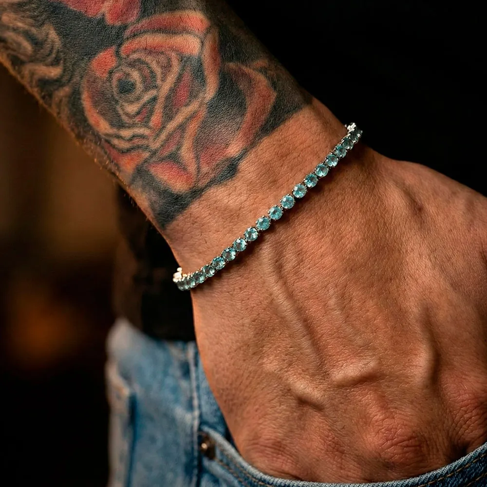
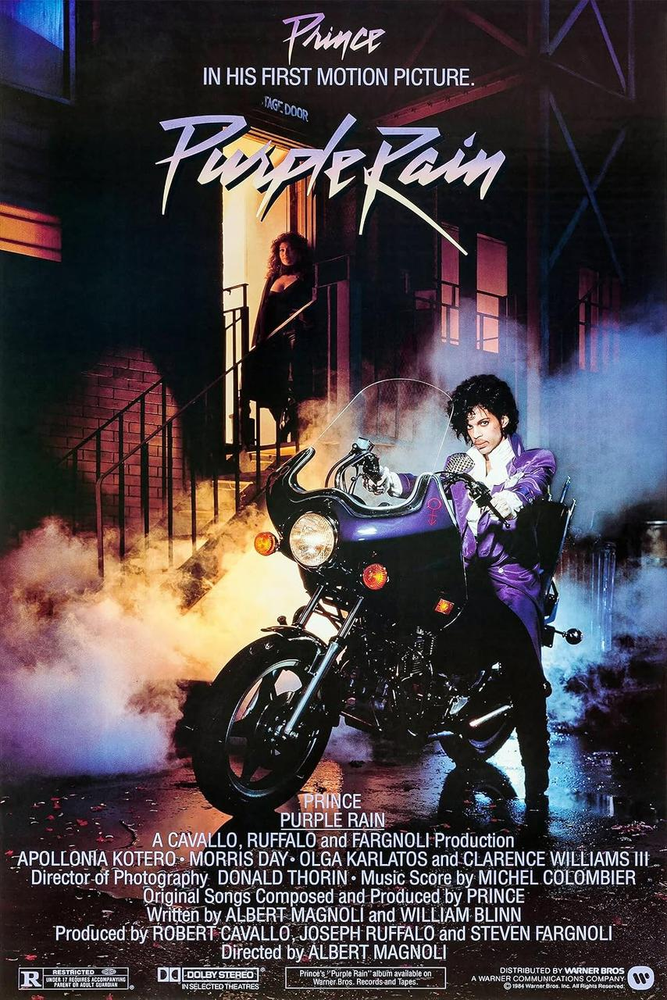

TAO · board estratégico de marca, produto e lançamento
Prata fria, pedra viva e uma presença que encosta cultura na pele.
TAO ganha força como uma marca de joias em prata com pedras naturais, atmosfera noturna, linguagem editorial e histórias que conversam com moda, ancestralidade e identidade. O próximo avanço não depende de mais volume, e sim de mais nitidez.



União de prata, sombra, pele, cor mineral e referências culturais com atitude.
Norte estratégico
TAO funciona melhor quando a joia parece matéria com história, não só acessório com brilho.
Apontamos para uma marca autoral, adulta e precisa. A melhor versão da TAO não é maximalista, nem esotérica demais, nem comercialmente neutra. Ela vive no encontro entre textura mineral, linguagem curta, cultura visual forte e histórias que vestem a peça de significado.
Origem visível
Cada peça precisa expor matéria, pedra, textura e a biografia que sustenta seu valor.
Presença sem excesso
O luxo certo aqui é contido, noturno e seguro, sem cair em ostentação vazia.
Céu encostando na pele
O cósmico entra como atmosfera. O centro continua sendo a densidade física da joia.
História vestível
Pedra, nome da coleção, embalagem e conteúdo precisam contar a mesma narrativa cultural.
Público e território
O vazio mais interessante está em quem enxerga moda, cultura e símbolo como uma mesma linguagem.
Nossa frente é: joias com pedras naturais para um público masculino ou unissex que não quer apenas status, mas repertório, presença e significado. Isso aproxima a TAO de música, imagem, arte e ancestralidade sem exigir discurso caricato.
Rap e criação autoral
Pessoas ligadas a rap, cena urbana, design e repertório cultural tendem a responder bem a joias que carregam história, origem e posicionamento visual forte.
Streetwear com profundidade
Um público que usa roupa e acessório como assinatura pessoal, busca diferenciação e rejeita aparência de catálogo neutro ou peça sem narrativa.
Consumo com significado
Perfis femininos e unissex já próximos de pedras naturais podem entrar pela TAO por causa da densidade estética, da fotografia e da leitura mais adulta da joia.


Identidade e imagem
Precisamos lapidar escrita/leitura, repertório e consistência.
Paleta proposta
Aubergine mineral
#120915
Prata fria
#D9D5DF
Pedra aquática
#7DC9C8
Lavanda elétrica
#8B6BB8
Grafite violeta
#3D3448
O que lapidar na logo
- Criar versão plana para tamanhos pequenos.
- Desenhar um selo secundário mais simples.
- Fazer edição da parte superior da flor de lis.
- Definir um padrão claro de textura e não depender de efeito manual em toda aplicação.
Território verbal
Origens em prata. Presença em pedra.
Frase curta, voz segura, símbolo sem caricatura.
O ideal é falar de origem, toque, presença, fase, memória e gesto. A marca perde força quando tenta parecer fantasia mística ou catálogo masculino padrão.
Referências que sustentam
Pele, pedra, contraste e atmosfera
Referências ruins
Catálogo "correto demais" e sem voz própria


Pedras e narrativa
A maior vantagem competitiva não está só na pedra em si, mas na história que ela destrava.
Cada pedra já vem com um mundo embutido. Transformar esse repertório em coleção, copy, embalagem e conteúdo é o que pode tirar a TAO do lugar comum.
Ancestralidade com profundidade
Funciona como símbolo de raridade, herança e densidade cultural. Boa para falar com um público que valoriza origem, repertório e força silenciosa.
Mar, memória e assinatura fresca
Abre uma narrativa mais líquida e afetiva. Traz leveza.
Proteção e sobriedade
É uma porta de entrada forte para uma coleção inaugural mais escura, precisa e masculina ou unissex.
Como transformar pedra em conteúdo
- Nome da peça com memória clara.
- História curta da origem ou da descoberta.
- Sensação ou fase que a peça representa.
- Foto que mostre textura, pele e escala real.
Pulseiras assinatura
Resolvem bem a entrada na marca, combinam com uso recorrente e ajudam a testar mix de pedras com custo de narrativa mais controlado.
Peças com biografia
Cada peça precisa ter um motivo para existir: origem da pedra, intenção, fase, gesto e combinação visual.
Cápsulas fechadas
Melhor lançar três ou quatro linhas com linguagem forte do que muitas peças sem unidade e sem memória.
Hipótese para a coleção zero
Traduzir o território da TAO
Prata oxidada, ônix, ametista e contraste entre sombra, proteção e brilho controlado.
Posicionamento resumido
Joias com pedras naturais para quem escolhe presença, matéria e história antes de tendência.
Pilares de conteúdo
- Close de pele, metal, fecho e textura.
- História curta de cada pedra e da coleção.
- Bastidores, processo e acabamento como prova de valor.
- Styling com repertório, não com neutralidade sem personalidade.
- Memória, fase, proteção e gesto como assuntos recorrentes.
TAO x Universo Prata
O vínculo deve ser percebido pela inteligência sobre pedras e prata. A diferença precisa aparecer no tom, na densidade da imagem e na maneira como a peça encosta na cultura.
Conexão de universo
Compartilhar repertório sem compartilhar protagonismo.
A Universo Prata pode enriquecer o pano de fundo da TAO, mas a diferenciação precisa ser nítida desde o primeiro scroll.
- Pedras naturais como repertório educacional e narrativo.
- Atmosfera cósmica como fundo, não como excesso de símbolo.
Universo Prata olha para o céu. TAO faz o céu encostar na pele.